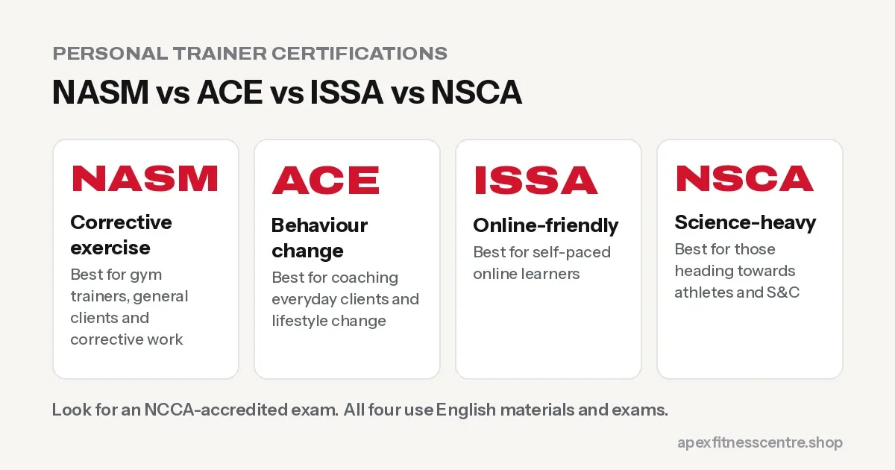

NASM vs ACE vs ISSA vs NSCA: Which Personal Trainer Certification Is Best?
NASM, ACE, ISSA and NSCA compared for Nepalis: focus, accreditation, study style, recognition abroad, and how to choose the right one for your career.

If you want to work as a personal trainer in Nepal or abroad, an internationally recognised certification makes a big difference. The four names you’ll hear most are NASM, ACE, ISSA and NSCA. All four are respected; the “best” one depends on where you want to work and what kind of clients you want to train.
Quick comparison
| NASM-CPT | ACE-CPT | ISSA CPT | NSCA-CPT | |
|---|---|---|---|---|
| Known for | Corrective exercise, structured training model | Behaviour change, general population | Practical, online-friendly study | Science-heavy, strength and conditioning |
| Best for | Gym trainers, general clients, corrective work | Coaching everyday clients and lifestyle change | Self-paced online learners | Those heading towards athletes and S&C |
| Study style | Online materials, proctored exam | Online materials, proctored exam | Online course and exam | Textbook-heavy, exam at a test centre or online proctor |
| Accreditation | NCCA-accredited exam | NCCA-accredited exam | NCCA-accredited exam option available | NCCA-accredited exam |
| Typical prerequisites | 18+, high school or equivalent, CPR/AED | 18+, high school or equivalent, CPR/AED | 18+, varies by programme | 18+, high school or equivalent, CPR/AED |
Programmes, prices and requirements change. Always check the official website before you pay.

What “NCCA-accredited” means and why it matters
The NCCA (National Commission for Certifying Agencies) is an independent US body that accredits certification exams. Many gyms, especially in the Gulf, US and Europe, prefer or require trainers with NCCA-accredited certifications. If you’re planning to work abroad, this matters. See gym trainer jobs in the Gulf for Nepalis.
How to choose
Choose NASM if…
You want a widely recognised name in commercial gyms and like a structured system for programming and corrective exercise. In Nepal, NAES says it offers NASM programmes with classroom support. See how to become a gym trainer in Nepal.
Choose ACE if…
You want to coach everyday people, especially beginners and weight-loss clients, and you’re interested in habits and behaviour change.
Choose ISSA if…
You prefer flexible online learning and practical business content. Check that you choose the option with an NCCA-accredited exam if you want maximum recognition.
Choose NSCA if…
You love the science of training and want to move towards athletes or strength and conditioning. Later, the CSCS credential (which requires a bachelor’s degree) is highly respected for working with teams.
Tips for Nepali students
- English level matters: all four use English materials and exams. Practise reading textbooks and taking timed practice tests.
- Budget for extras: exam retakes, CPR/AED course, study materials, and recertification every couple of years.
- Combine with real experience: certification gets you hired; floor experience keeps you employed.
- Local academies can help with classroom teaching and practical coaching while you study.
Costs and study time to plan for
Exact prices change and often depend on the package and promotions, so always check the official website before paying. When budgeting, consider:
- The course and exam fee, often sold in basic and premium bundles
- CPR/AED certification, which most US certifications require before you sit the exam
- Exam retake fees, if needed
- Recertification: most certifications need continuing education credits every 2–3 years
- Study time: many people take about 3–6 months studying part-time
Experience matters as much as the certificate
Employers in Nepal and abroad look for trainers who can coach real people. While you study:
- Train consistently yourself and keep a training log
- Shadow experienced trainers at a local gym
- Practise coaching friends or family on basic lifts
- Learn first aid and how to adapt exercises for beginners, older adults and people with injuries
See how to become a gym trainer in Nepal and gym trainer jobs in the Gulf.
Frequently asked questions
Which certification is most recognised in Dubai and the Gulf?
NCCA-accredited certifications such as NASM, ACE, NSCA and accredited ISSA options are widely recognised; UK Level 3 qualifications are also common. Check employer and country requirements.
Can I study NASM or ACE from Nepal?
Yes. Study materials are online, and exams can often be taken with online proctoring or at approved centres. Check current exam options.
Which certification is easiest?
Difficulty varies by person. ISSA’s online format suits many self-learners; NSCA is often considered the most science-heavy.
Do I need a degree to become a personal trainer?
Not for most CPT certifications. You usually need to be 18+ with a high school-level education. Some advanced credentials need a degree.
Sources
- ACSM position stand: progression models in resistance training for healthy adults (American College of Sports Medicine, 2009)
Information checked on 23 October 2026. Confirm current details on each organisation’s official website.
General information, not medical advice. Ask a doctor if you have a health condition. Results vary from person to person.
Comments
Loading comments…